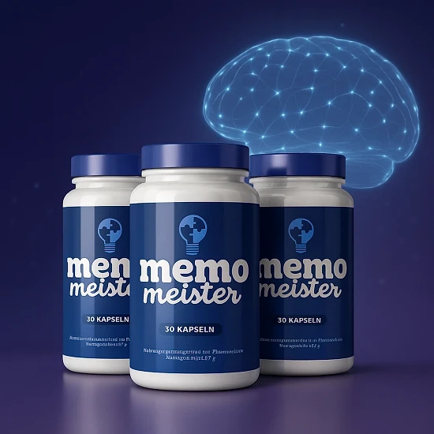
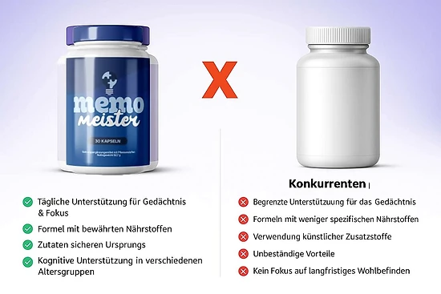

Was ist Memo Meister und wie wirkt es?
Kurz gesagt ist Memo Meister eine Kapsel zur Nahrungsergänzung, die die Marke als natürliches Nootropikum bezeichnet. Es soll Konzentration, Gedächtnis und geistige Frische Tag für Tag begleiten. Statt auf kurzfristige Wachmacher wie Koffein baut die Rezeptur auf bekannte Nährstoffe. Gedacht ist es für Erwachsene, die bei der Arbeit, beim Lernen oder im Alltag Konzentration brauchen.
Die Flasche bezeichnet es als Nahrungsergänzung, die Nährstoffe und Pflanzenstoffe kombiniert. Mit 30 Kapseln in der Flasche und einer Einnahme pro Tag dauert die Kur einen Monat. Das deutschsprachige Etikett fasst Zusammensetzung, Anwendung und Warnhinweise übersichtlich zusammen.
Acht Bestandteile bilden die Rezeptur, unter anderem L-Carnitin, L-Citrullin, Safran, Traube und Zink. Die Marke erklärt, jeden Wirkstoff mit Blick auf die Aufnahme ausgewählt und dosiert zu haben. Künstliche Zusatzstoffe oder schädliche Chemikalien sind laut Marke nicht enthalten. Nach Angaben der Website eignet sich das Präparat für eine dauerhafte Einnahme ohne Abhängigkeit. Die pflanzlichen Kapseln werden einfach mit Wasser geschluckt, ganz ohne Zubereitung.
Zwei Nährstoffe tragen die wichtigsten Aussagen: Zink für die kognitive Funktion und Niacin für den Energiestoffwechsel. Niacin trägt laut Etikett zudem zur Verringerung von Müdigkeit bei. Maca, eine Pflanze aus den Anden, ergänzt polyphenolreiche Extrakte aus Pinienrinde und Traube.
Erste Eindrücke sollen nach zwei bis drei Wochen kommen, empfohlen werden mindestens drei Monate. Die Formel ist auf eine längere Anwendung ausgelegt, nicht auf schnelle Effekte.
Das Produkt wird in den USA hergestellt, den europäischen Vertrieb übernimmt Digistore24 MSLW Limited in Dublin. Die Flasche nennt ein Nettogewicht von 25,52 g.
Zur Klarstellung: Memo Meister ist nicht zur Diagnose, Behandlung, Heilung oder Vorbeugung von Krankheiten bestimmt. Die Website räumt ein, dass die EFSA ihre Aussagen nicht bewertet hat, und die Ergebnisse sind nicht bei allen gleich. Wer dauerhaft Probleme mit der Konzentration hat, sollte die Ursache ärztlich klären lassen.
Memo Meister Inhaltsstoffe
Die Nährwerttabelle von Memo Meister zeigt die Mengen pro Kapsel:
Vitamin B3 (20 mg): hilft beim Energiestoffwechsel und gegen Müdigkeit.
Zink (11 mg): ein Mineralstoff für eine normale kognitive Funktion.
Aminosäuren (150 mg + 150 mg): L-Citrullin und L-Carnitin, natürlich im Körper vorhanden.
Seekiefer (100 mg): ihre Rinde liefert natürliche Antioxidantien.
Macawurzel (50 mg): typische Pflanze der Andenhochebenen.
Traubenschale (15 mg) und Safranfäden (5 mg): zwei Pflanzenextrakte, die die Formel ergänzen.
Als Hilfsstoffe nennt das Etikett die pflanzliche Kapsel, Cellulose und Rieselhilfsmittel. Die Angaben pro Kapsel machen die Zusammensetzung transparent und leicht prüfbar.
Unter den angegebenen Zutaten findet sich kein Koffein. Den größten Anteil haben die zwei Aminosäuren, zusammen 300 mg. Auch ein Extrakt der Juckbohne, Mucuna pruriens, steht in der Zutatenliste, allerdings ohne Dosis. Die Andenpflanze Maca und der Safran blicken auf eine lange Verwendungsgeschichte zurück. Ein NRV-Wert ist lediglich für Niacin und Zink angegeben. So liegt die gesamte Zusammensetzung offen. Eine Flasche reicht exakt für einen Monat. Die vollständige Zutatenliste hilft allen, die bestimmte Stoffe meiden müssen.
Memo Meister Nebenwirkungen
Laut Website ist Memo Meister meist gut verträglich, da die Zutaten natürlich sind. Die Website nennt seltene, milde Effekte, vor allem vorübergehende Verdauungsveränderungen in den ersten Tagen.
Memo Meister wird unter 18 Jahren sowie in Schwangerschaft und Stillzeit nicht empfohlen. Bei Medikamenten oder gesundheitlichen Problemen empfiehlt das Etikett eine vorherige ärztliche Beratung.
Genannt werden in den FAQ insbesondere Diabetes, Bluthochdruck und Blutverdünner. Empfohlen wird außerdem, das Präparat und Medikamente mindestens zwei Stunden versetzt einzunehmen. Laut FAQ sollten Menschen mit schweren Beschwerden es nicht ohne ärztliche Aufsicht nehmen.
Halten Sie sich an die Dosis und verwenden Sie keine Flasche ohne intakten Verschluss. Treten ungewöhnliche Reaktionen auf, die Einnahme stoppen und eine Fachkraft fragen. Jeder reagiert anders, und eine medizinische Fachkraft kann Sie gut beraten. Solche Regeln sind bei Formeln aus Nährstoffen und Pflanzen gängig. Laut Website haben weder EFSA noch FDA die Aussagen geprüft, was zu Zurückhaltung rät. Beim Arzttermin hilft die Flasche, damit die Fachkraft die Zusammensetzung kontrollieren kann. Bei Neigung zu Empfindlichkeiten lohnt es sich, die ersten Tage aufmerksam zu verfolgen. Bei anhaltenden Beschwerden empfiehlt sich eine Pause, bis die Ursache ärztlich abgeklärt ist. Ein Apotheker hilft zu klären, ob die Zutaten zu bereits eingenommenen Mitteln passen. Bei weiteren Präparaten mit Zink oder Niacin lohnt ein Blick auf die tägliche Gesamtmenge, um Doppelungen zu vermeiden.
Memo Meister Dosierung
Das Etikett sieht eine einzige Kapsel täglich vor. Die Website rät zur Einnahme 30 Minuten vor der Hauptmahlzeit mit einem großen Glas Wasser.
Die Flasche mit 30 Kapseln entspricht einem Monat Kur. Auf der Website findet sich eine Angabe von zwei Kapseln, das Etikett nennt aber nur eine. Die Kapsel wird so, wie sie ist, mit Wasser eingenommen.
Laut Marke ist die regelmäßige Einnahme entscheidend, erste Effekte zeigen sich nach zwei bis drei Wochen. Die Marke spricht von klareren Effekten nach vier bis sechs Wochen und empfiehlt drei Monate. Drei Monate Kur bedeuten drei Flaschen.
Eine ausgewogene Ernährung und regelmäßige Bewegung begleiten die Kur sinnvoll. Ein Nahrungsergänzungsmittel ersetzt nie eine abwechslungsreiche Kost, betont das Etikett.
Die empfohlene Dosis darf nicht überschritten werden; die Flasche wird trocken unter 30 °C gelagert. Das Produkt gehört außer Reichweite von Kindern, das Datum steht unten auf der Flasche. Ein vergessener Tag wird nicht mit zwei Kapseln nachgeholt. Eine höhere Dosis beschleunigt nichts, wichtiger ist die regelmäßige Einnahme. Ein notiertes Startdatum erleichtert die Planung der weiteren Kur. Ein fester Zeitpunkt vor einer Hauptmahlzeit, etwa vor dem Mittagessen, erleichtert die Routine.
Memo Meister – Rückerstattung
Jeder Kauf von Memo Meister ist durch eine 60-Tage-Garantie abgesichert. Unzufriedene Kunden erhalten den gesamten Kaufbetrag zurück, nach den Regeln der Marke.
Rückgabezeitraum: 60 Tage ab dem Kauf, mit der Rücksendung sämtlicher Flaschen. Entscheidend für die Frist ist das Kaufdatum.
Zu Beginn: Kontaktieren Sie support@centralmeister.com mit Bestellung und Rückgabegrund. Name, Anschrift und Kontaktdaten gehören laut Richtlinie in die Nachricht.
Danach: Das Paket geht an Memo Meister Returns in Moordrecht (Niederlande), mit aufzubewahrender Sendungsnummer. Die Marke bearbeitet keine Rücksendungen ohne Verfolgung. Die Bestellbestätigung dient als Nachweis des Datums und hilft dem Kundenservice.
Abschließend: Das Paket wird kontrolliert, und die Antwort zur Erstattung kommt per E-Mail. Rechnen Sie mit 5 bis 10 Werktagen, bis der Betrag auf Ihrem Zahlungsmittel erscheint. Erstattet wird immer auf das Zahlungsmittel des Kaufs, Rückfragen klärt der Kundenservice per E-Mail. Die Rücksendekosten gehen nach der Richtlinie zulasten des Kunden. Eine genaue Einhaltung der Schritte sorgt für eine zügige Bearbeitung. Wer diese Nachweise bereithält, erspart sich Rückfragen beim Support und Zeit. Erst nach Eingang und Kontrolle der Flaschen wird über die Erstattung entschieden. Die Garantie ist hilfreich, doch eine Prüfung vor dem Kauf bleibt sinnvoll und spart später Aufwand.
Die Adresse helpdesk@digistore24.ie steht ebenfalls auf dem Etikett, und die gesamte Richtlinie ist online einsehbar. Vor der Bestellung sollte man sie aufmerksam lesen.
Memo Meister Kundenbewertungen
-
Maria Schmidt — Berlin, DeutschlandVerifizierter Kauf – 6 Flaschen
„Unglaublich! Meine geistige Energie hat sich in 3 Monaten mit Memo Meister verdreifacht. Ich fühle mich wieder wie ich selbst und kann mich viel besser konzentrieren. Ein Produkt, das wirklich funktioniert!“
-
Anna Klein — München, DeutschlandVerifizierter Kauf – 6 Flaschen
„Nach den Wechseljahren dachte ich, ich würde nie wieder meine geistige Schärfe zurückgewinnen. Memo Meister hat bewiesen, dass ich falsch lag! Ich fühle mich wieder energiegeladen und geistig klar mit 52 Jahren.“
-
Ricardo Lima — Frankfurt, DeutschlandVerifizierter Kauf – 6 Flaschen
„Ich arbeite als Personal Trainer und habe immer Produkte getestet. Memo Meister ist anders! Ich fühle mehr Konzentration beim Training und mehr Energie. Eine sehr gute Erfahrung, die ich mit anderen teile!“
Memo Meister – Wo kaufen?
Wer Memo Meister kaufen möchte, nutzt die offizielle Website get-meister.com, auf der Digistore24 die Zahlung abwickelt. Die Marke stellt klar, dass es nicht bei Amazon und nicht im Handel verkauft wird. Vor dem Kauf lässt sich das komplette Etikett auf der offiziellen Website ansehen.
Angebote von Drittanbietern können das Original nachahmen, ohne Garantie zu Herkunft und Lagerung. Für ein Präparat ist das ein Risiko für Sicherheit und Qualität, und die Garantie greift womöglich nicht.
Die offizielle Website bleibt der sicherste Weg zum Originalprodukt, mit Garantie und Kundenservice. Bezahlt wird laut Bestellseite einmalig, und der Support ist unter support@centralmeister.com erreichbar. Das gelieferte Produkt entspricht dann genau dem Etikett der offiziellen Website. Die Herkunft vor dem Kauf zu prüfen, ist der beste Schutz vor schlechten Erfahrungen. Die Garantie ist an eine Bestellung über die offizielle Website geknüpft. Vor der Eingabe der Zahlungsdaten hilft ein kurzer Blick auf die Adresse im Browser. Erst eine offizielle Bestellung sichert den vollen Zugang zum Kundenservice.
Ein letzter Check: Ist die Seite wirklich die offizielle Memo Meister-Website? Erst dann bezahlen.
Um sicherzugehen, dass Sie das Originalprodukt erhalten, besuchen die meisten Nutzer die offizielle Website.
Ist Memo Meister Betrug?
Nichts deutet darauf hin, dass Memo Meister ein Betrug ist. Das Präparat existiert tatsächlich, wird über Digistore24 verkauft und zielt auf Gedächtnis und geistige Klarheit.
Transparenz ist gegeben: Die Menge jedes Wirkstoffs ist angegeben. Die Rollen von Zink und Vitamin B3 sind anerkannte Funktionen.
Die Flasche nennt den irischen Vertreiber, die Website eine Rücksendeadresse in den Niederlanden. Über Ergebnisse sagen diese Kontaktdaten nichts, doch sie belegen echte Verkäufer.
Die Bestellseite setzt auf Dringlichkeit, mit Timer und Knappheitsmeldungen. Versprechen zu Herz oder Appetit erscheinen auf der Verkaufsseite, ohne Grundlage auf dem Etikett. Niemand kann mit einem Präparat ein bestimmtes Ergebnis versprechen.
Es gilt eine 60-tägige Geld-zurück-Garantie mit gut erklärten Rückgabeschritten. Besser ist es, die empfohlene Kur abzuwarten und realistisch zu bleiben. Unterm Strich wirkt Memo Meister seriös, trotz einer recht offensiven Vermarktung. Dass identifizierbare Unternehmen den Verkauf abwickeln, ist beruhigend. Im Zweifel und bei Medikamenten hilft ein Gespräch mit dem Arzt vor dem Start. Auf diese Weise lässt sich die Einnahme sicher und überlegt planen. Vor der Bestellung kann man offene Fragen auch per E-Mail an den Support richten. Wer bewusst die offizielle Quelle wählt, schützt sich vor Fälschungen.
Memo Meister kann für Erwachsene passen, die ihre geistige Klarheit begleiten möchten, über die offizielle Website und nach Rücksprache bei Bedarf.
Wer Produktdetails überprüfen oder die aktuelle Verfügbarkeit prüfen möchte, ist auf der offiziellen Memo Meister-Website am sichersten aufgehoben.
